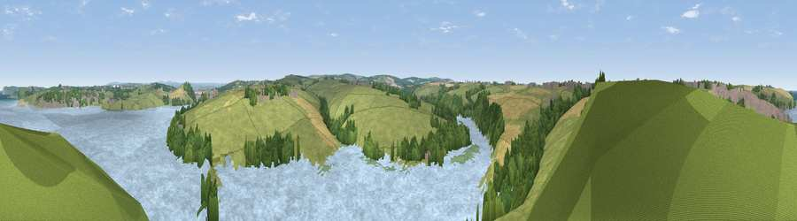

Viewpoint near Padstow
#24939 in England · top 48% of its area beats it · near PadstowWhere it is
The exact computed spot (SW 92225 74075). Click the marker for map links.
The view, rendered

A 360° render of this exact spot computed from the terrain model, tree cover and land cover — summer colours, afternoon light, calibrated against photographs of famous viewpoints. Real trees, hedges and buildings will differ in detail.
The panorama
Grey silhouette: terrain skyline in each direction (720 bearings, Earth curvature and refraction included). Dashed green: skyline with trees (+15 m) and buildings (+8 m) as obstacles. Blue strip: how far the ground is visible on each bearing.
Where the view opens
Wedge length = distance to the farthest visible ground on that bearing (vegetation-aware). Rings at 10, 25 and 50 km.
What fills the view
55% water · 29% grassland · 8% woodland · 5% cropland · 1% wetland · 1% built-up
Angular shares of the visible panorama (visual magnitude), not map area. Landscape diversity 0.50 (0–1 Shannon).
Key numbers
More beautiful places nearby
The staircase of upgrades: each row has a higher view potential than everything closer. Driving times are estimates from straight-line distance, calibrated against real road routing — check an actual route before setting out.
| Place | Direction | Drive | Score |
|---|---|---|---|
| Viewpoint near Rock | E · 2 km | ~6 min | 56.5 |
| Crugmeer Hill | NW · 3 km | ~7 min | 67.6 |
| Viewpoint near St Issey | SE · 3 km | ~8 min | 70.3 |
| Viewpoint near Trevone | NNW · 4 km | ~9 min | 72.3 |
| Viewpoint near St Issey | S · 6 km | ~12 min | 74.0 |
| Viewpoint near Tremayne | SSE · 6 km | ~14 min | 74.2 |
| Viewpoint near New Polzeath | N · 7 km | ~14 min | 75.8 |
| Viewpoint near St Eval | SSW · 7 km | ~15 min | 78.3 |
50.52947, -4.93301 · source: screening · position refined by local search. Computed location — check access rights before visiting.